https://cal-cs184-student.github.io/hw-webpages-sp24-KevinXu02/hw2/index.html
CS184 Homework 2
Overview
In this assignment, I implemented a series of geometric algorithms and operations to manipulate and refine
3D meshes,
focusing on the construction and evaluation of Bézier curves and surfaces, computing area-weighted vertex
normals, and
performing mesh editing operations like edge flips and splits. The highlight of the assignment was the
implementation of
the Loop subdivision algorithm, which significantly refines and smooths mesh surfaces by iteratively
updating vertex
positions and subdividing the mesh into finer triangles. This process involved a detailed understanding of
mesh
topology, including vertices, edges, and faces, and required careful consideration of how to maintain the
mesh's
connectivity and integrity after each operation.
One interesting aspect I learned from this assignment is how geometric algorithms can be applied to create
smooth and
detailed 3D models from coarse meshes. The transformation of a simple cube into a smoother, more complex
shape using
Loop subdivision was particularly fascinating, demonstrating how repeated application of subdivision rules
can
approximate a smooth limit surface. Additionally, the edge flip and split operations underscored the
importance of mesh
topology and the need for careful updates to vertex, edge, and face references to preserve the mesh
structure, which is
crucial for 3D modeling and computer graphics applications.
Task 1: Bézier Curves with 1D de Casteljau Subdivision
de Casteljau's algorithm and its implementation
De Casteljau's algorithm is a recursive method used to evaluate and construct Bézier curves. The algorithm
operates based on a set of control points that define the shape of the curve. The fundamental idea is to
linearly
interpolate between these control points, progressively reducing the number of points until a single point
is
obtained,
which lies on the Bézier curve for a given parameter value , where .
My implementation takes a set of control or intermediate points as input and generates a new set of points by
linearly interpolating between each pair of consecutive points using the formula . This step reduces the total number of points, moving closer to the final
curve point. The function returns these newly computed points, which can then be used in subsequent
iterations of
the process until a single point, lying on the Bézier curve for the specified , is obtained. This
iterative process mirrors the recursive nature of de Casteljau's algorithm, where each step brings the
points closer
to the curve.
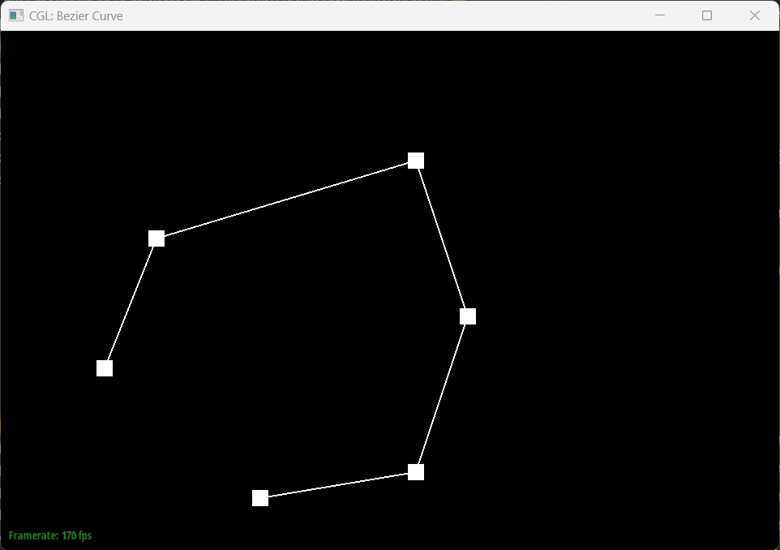
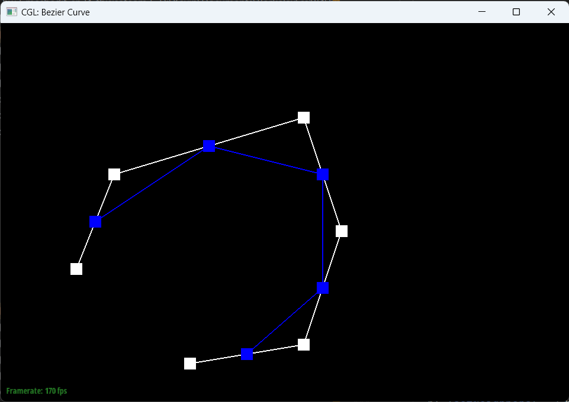
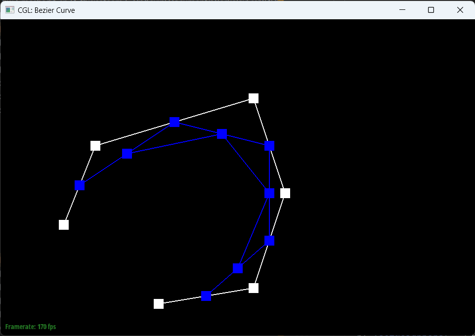
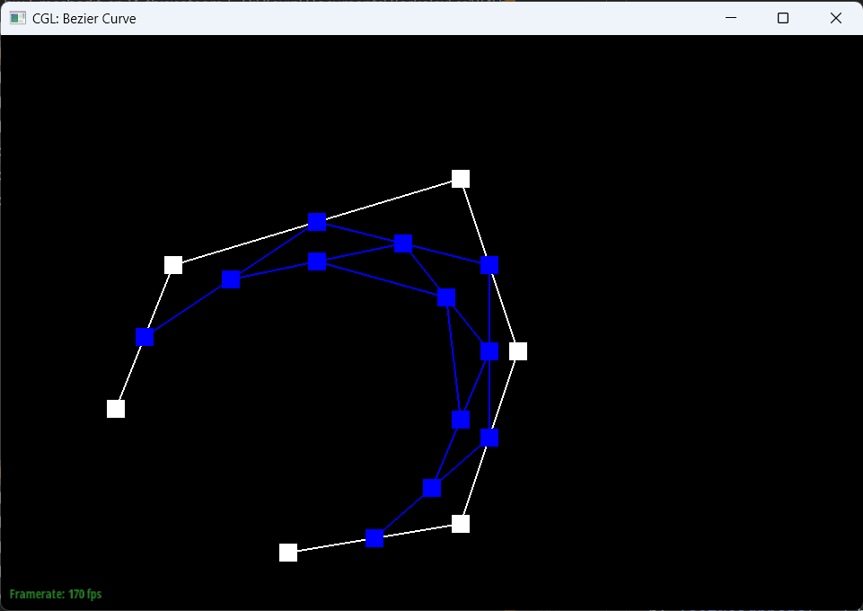
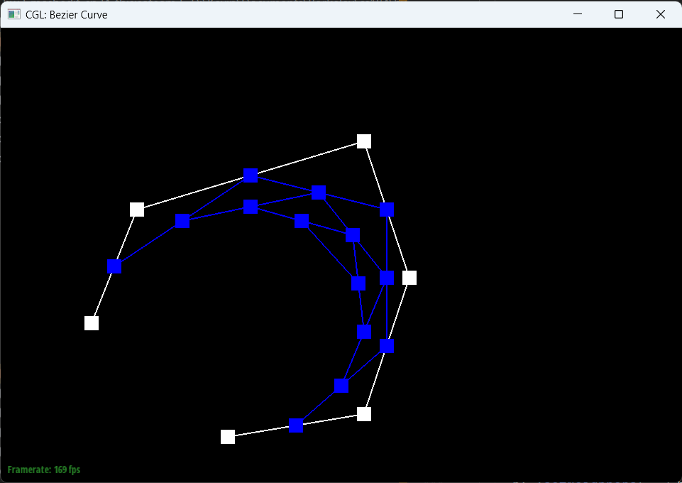
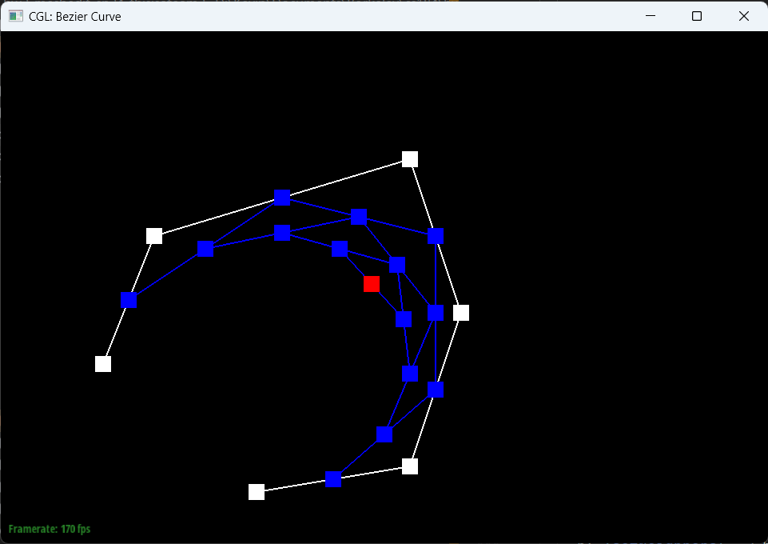
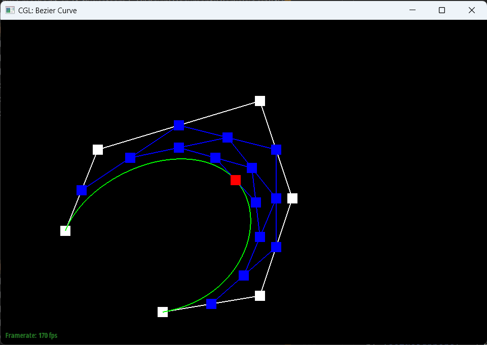
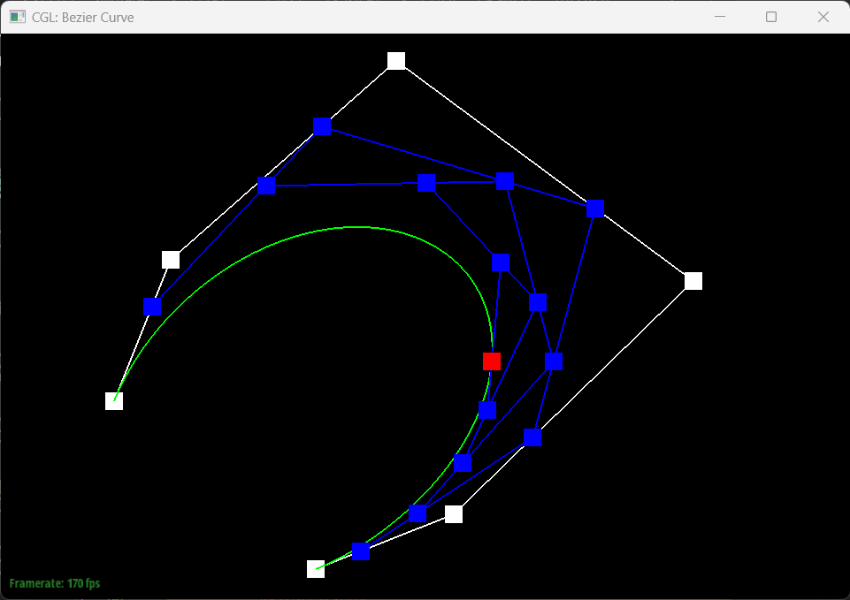
Task 2: Bézier Surfaces with Separable 1D de Casteljau
The de Casteljau algorithm extends to Bézier surfaces by applying the same principle used for Bézier curves
to a two-dimensional grid of control points, allowing the construction and evaluation of smooth surfaces.
Each
control point in this grid influences the surface shape, and the algorithm computes points on the surface by
interpolating between these control points in two parameters, typically denoted as and , which range from 0 to 1.
This two-parameter approach enables the creation of complex, curved surfaces.
In my implementation, the evaluateStep function performs one iteration of the de Casteljau's
algorithm
for a given set of 3D points and an interpolation parameter . It linearly interpolates between each
pair of consecutive points in the input vector using the formula to produce a new set of intermediate points. This function is used within
evaluate1D, which applies the de Casteljau algorithm iteratively to reduce the set of points
down to a
single point,
representing a position on the Bézier curve defined by one parameter (either or ).
The evaluate function extends this concept to Bézier surfaces by first applying
evaluate1D
along one
parameter direction (say, ) for each set of control points that define curves in the direction, thereby
reducing the two-dimensional grid of control points to a single-dimensional set of points. It then applies
evaluate1D again, but this time along the other parameter direction (say, ), to this set of points
to obtain the final point on the Bézier surface for the parameters . This two-step process
effectively evaluates the Bézier surface by iteratively reducing the dimensionality of the control points
set, first
from two dimensions to one, and then from one dimension to a single point on the surface.
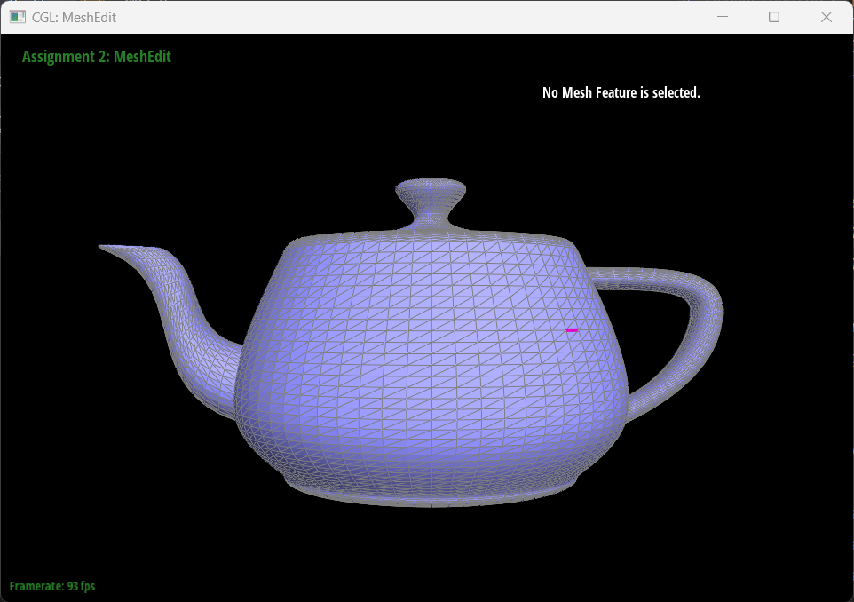
Task 3: Area-Weighted Vertex Normals
In my implementation for computing area-weighted vertex normals, the algorithm approximates the normal at a
vertex by
averaging the normals of all adjacent triangles. The area weighting comes from
the
fact that the cross product of two vectors forming a triangle not only gives a vector vertical to the
triangle but also has a magnitude proportional to the area of the parallelogram spanned by
the two
vectors.
The implementation steps are as follows:
- Initialization: A
Vector3D named normal is initialized to (0,
0, 0) to
accumulate the weighted normals.
- Iterating Over Neighboring Triangles:For each non-boundary triangle, the positions of
its vertices (
v0, v1, v2) are
obtained. The vector from v0 to v1 and the vector from v0 to
v2 are
used to compute the cross product, which yields a normal vector for the triangle and proportional to its
area.
This normal is then added to the normal vector, weighted by the triangle's area.
- Next Triangle: After dealing with one triangle, move to the next one that shares the
vertex, skip if it is in the boundary, and
repeat the process.
- Normalization: Once all connected triangles have been considered, normalize the
accumulated
vector to ensure it a proper normal.
The following images demonstrate the difference between the flat shading and the phong shading.
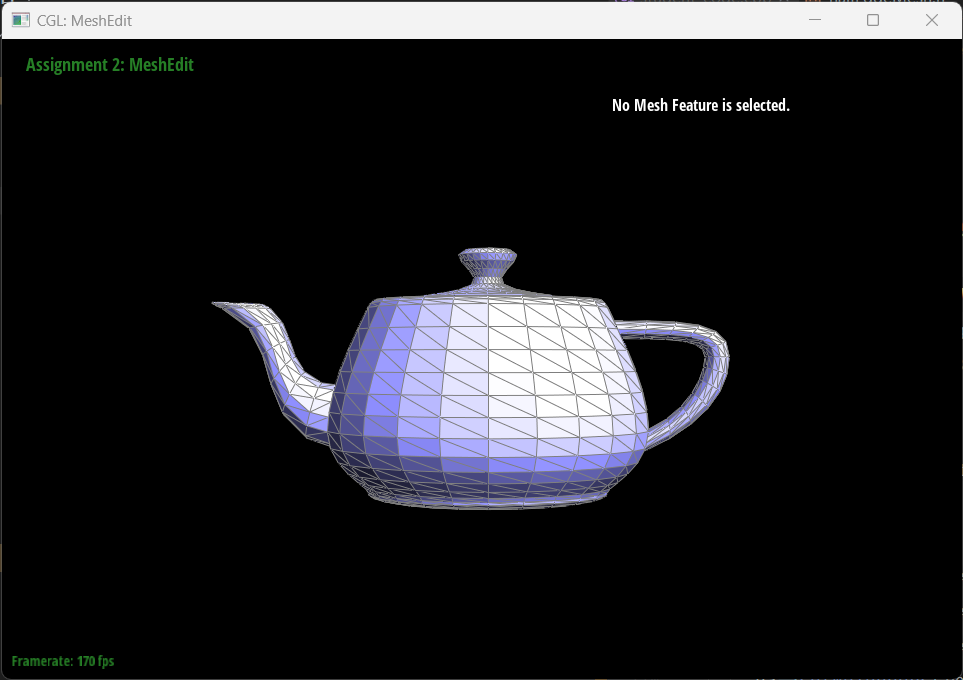
Task 4: Edge Flip
Explaination
In my implementation of the edge flip operation, I've followed a systematic approach to rewire the
connections between vertices, edges, and faces in a mesh to effectively "flip" an edge. The process involves
several steps:
- Identifying the Elements: I start by identifying all the half-edges, vertices, and
faces involved in the operation. This includes the half-edges emanating from the edge to be flipped (h0
and h3), their immediate next half-edges in the loop (h1, h2, h4, h5), and the vertices at the ends of
the original edge and the vertices opposite to it in the adjoining faces (v0 to v5).
- Boundary Check: I ensure that the edge to be flipped is not on the boundary of the mesh
because flipping a boundary edge is undefined.
- Rewire Half-Edges: The core of the operation involves reassigning the 'next', 'twin',
'vertex', 'edge', and 'face' pointers of the involved half-edges to effectively change the connectivity
in the mesh. This reassignment redirects the half-edges to form two new triangles from the previous
configuration, effectively flipping the common edge.
- Update Faces: The 'halfedge' pointers of the two faces involved in the flip are updated
to point to one of the half-edges that now form their new boundaries.
- Update Vertices: The 'halfedge' pointers of the vertices involved in the flip
(specifically, the vertices that were connected by the flipped edge) are updated to point to new
half-edges that emanate from them after the flip.
This method ensures that the connectivity of the mesh is maintained correctly after the edge flip, with the
flipped edge connecting the vertices that were previously opposite to it in the adjoining faces. The
operation returns an iterator to the flipped edge, although the actual edge object remains the same; only
its connectivity within the mesh is altered.
Implementation and Debugging
In the process of implementation, I first drew the shapes with flipped edges on paper. To minimize the number
of
modifications, I retained the names of each edge before and after flipping. In the most original
implementation, I did
not update the half-edge each face pointed to, so when flipping multiple times, holes would appear in the
teapot.
Fortunately, this problem was solved after I updated the half-edge pointed to by each face. However, at this
point, I
still had not assigned the half-edge pointed to by the vertices, and this bug was not discovered and fixed
until later
parts.
This part went relatively smoothly once it was confirmed that each edge was correctly updating its
neighbors. Updating
the faces successfully got the code running.
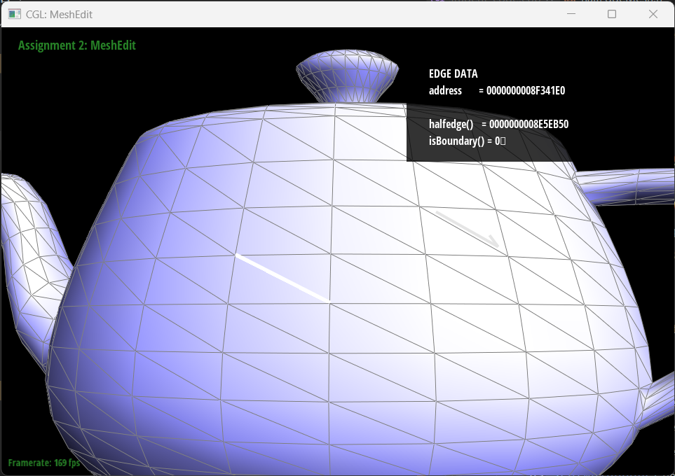
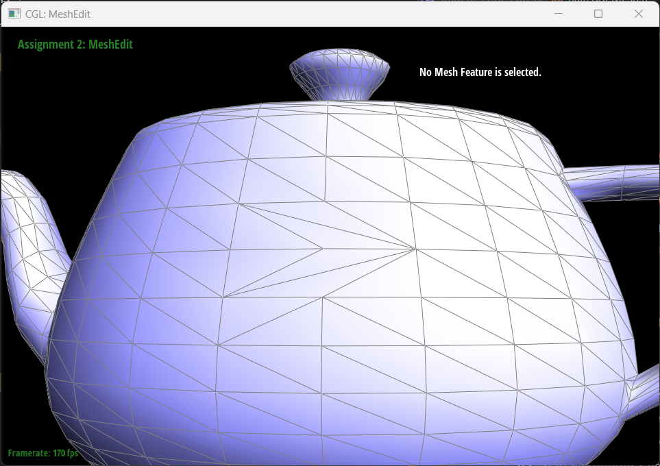
Edge Split
Explaination
In the implementation of the edge split operation, the goal is to divide an existing edge in a mesh into two
by
introducing a new vertex along the edge. Here's an overview of the process:
- Boundary Check: First, I check if the edge is on the boundary of the mesh. If it is,
the
operation is not performed, and one of the original vertices of the edge is returned.
- Identifying Elements: The half-edges, vertices, and faces involved in the
split are identified.
This includes the half-edges associated with the edge to be split (h0, h1, h2, h3, h4, h5), the vertices
at the
ends of the edge (v0, v1), and the faces adjacent to the edge (f0, f1).
- Creating New Elements: A new vertex is created at the midpoint of the edge.
Additionally, new
half-edges, edges, and faces are created to accommodate the changes in the mesh's topology caused by the
split.
- Updating Connectivity: The most complex part of the operation involves correctly
setting the
'next', 'twin', 'vertex', 'edge', and 'face' pointers for the original and new half-edges, ensuring the
mesh's
connectivity is correctly maintained. This reassignment essentially splits the edge and the adjacent
faces,
redistributing the half-edges among the newly formed faces.
- Assigning Edge and Face References: The 'halfedge' references of the new and original
edges and
faces are updated to point to appropriate half-edges that bound them.
- Updating Vertex References: The 'halfedge' references of the original vertices and the
new
vertex are updated to reflect the changes in their connectivity.
Implementation and Debugging
In this part, I followed the method from the previous section. I drew the changes in the shapes before and
after on
paper and assigned a set of names to each half-edge. After going through the debugging process in the
previous section,
the implementation of this part was very smooth, and the code ran successfully on the first try. Of course,
just like in
the previous section, the issue of reassigning half-edges to each vertex was not discovered until the final
part.
The left image shows the original teapot, the middle image shows the teapot after the edge split and the
right image shows the teapot after the edge split and the edge flip.
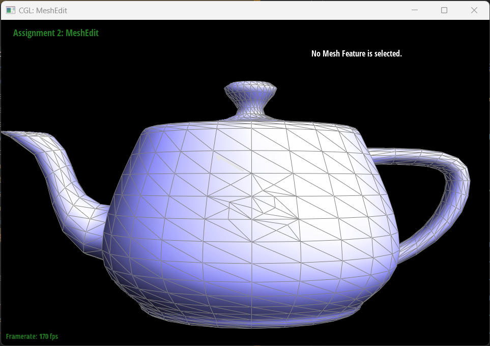
.png)
Task 6: Loop Subdivision
Explanation
In my implementation of the Loop subdivision algorithm within the upsample function, the goal
was to
refine the mesh, increasing its number of triangles and smoothing the surface. Loop subdivision is
particularly
suited for this task, as it defines a smooth limit surface through a series of refinement steps. Here's an
overview
of the process I followed:
- Updating Vertex Positions: For each vertex in the original mesh, I calculated a new
position
based on the Loop subdivision rules. This involves averaging the positions of neighboring vertices,
adjusted by
a weighting factor that depends on the number of neighbors. This new position aims to smooth out the
mesh by
relocating vertices to more optimal positions.
- Storing Edge Midpoints: I computed new positions for the midpoints of all edges, which
are the
positions of new vertices to be added during subdivision. These positions are determined by averaging
the
positions of the edge's endpoints and the opposite vertices of the adjoining faces, with specific
weights as
prescribed by Loop's rules.
- Splitting Edges: I iterated through each edge of the original mesh, splitting it to
introduce a
new vertex at its midpoint (calculated in step 2). This step increases the mesh's resolution. It's
crucial to
only split original edges to avoid infinite recursion.
- Edge Flipping: To improve mesh topology and ensure a more uniform distribution of
vertices, I
flipped edges that connected an original vertex to a new vertex. This step helps in maintaining a more
regular
mesh structure after subdivision.
- Finalizing Vertex Positions: Lastly, I updated each vertex's position to the new
position
calculated in the first step. This step is essential for moving the vertices to their new, smoothed
locations,
completing the subdivision process.
Implementation and Debugging
In this part, the comments in the code provided enough hints, so the process of writing the code was
relatively
smooth. The biggest difficulty was distinguishing between the newly added edges that needed to be flipped
and those
that did not: initially, I set the isnew attribute of the edges that did not need flipping to
false, but this caused the edge-splitting process to continue indefinitely. Setting it to
true, on the other hand, would cause these edges to be flipped.
I located the positions where these bugs appeared by commenting out different parts of the code separately. I
determined the edges that needed to be split by checking if both vertices of an edge were old, while setting
the
isnew attribute of the edges that did not need flipping to false, which smoothly
solved
most of the issues.
Finally, following hints on Ed, I went back to the first two parts and updated all the
edges
pointed to by the vertices, successfully completing the code for this part.
Results
Loop subdivision makes meshes smoother and adds more details. When we use Loop subdivision, we split each
edge to make
more points, edges, and faces. This makes the mesh look finer and smoother. The process also rounds off
sharp edges and
makes the whole mesh look more even. As we keep subdividing, the mesh gets closer to a smooth shape. This
makes the mesh look nicer. But, doing this also makes the mesh more complex, which means
computers need
to work harder to handle it.
During each step of the surface subdivision process, old vertices are smoothed by the positions of the
surrounding vertices.A challenge often encountered, especially with geometric shapes like cubes, is that the
corners and edges appear to be excessively pulled towards the center. By
pre-splitting the
edges, the influence of the corner vertices is distributed more evenly, which effectively
alleviated this problem. See the image
below.
More splitting:
Noticing that each face of the initial cube is divided by two triangles, for the vertices of the cube, some
are more
influenced by the adjacent vertices on the right-angle sides of these triangles (closer distance), while
others are more
influenced by the vertices adjacent to the hypotenuse (greater distance). Therefore, the vertices are not
uniformly
influenced by their neighboring vertices, leading to asymmetrical issues in the shape.
By pre-splitting the hypotenuse on each face of the cube, we can redistribute the influence more
uniformly.This additional step ensures that vertex are semmetrically distributed on the cube, which
improves the symmetry of the shape upon subdivision.
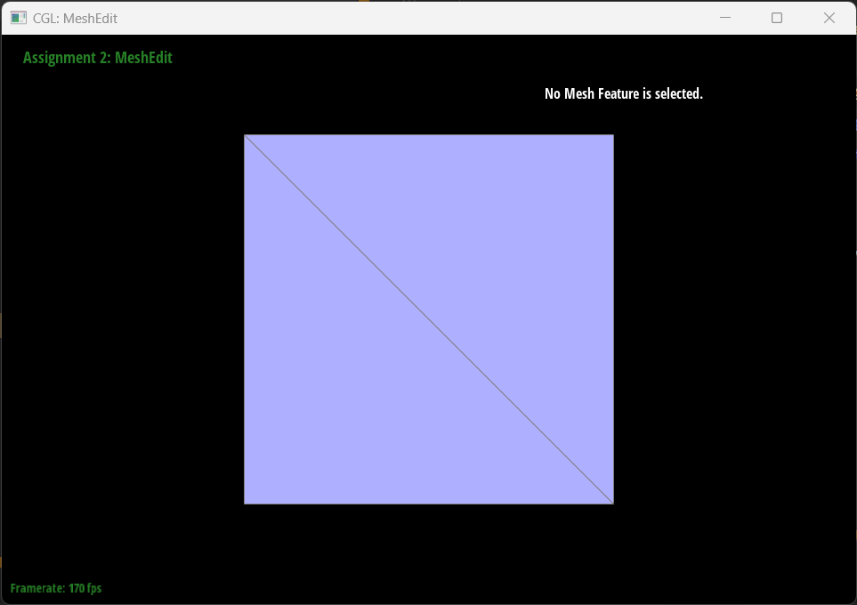
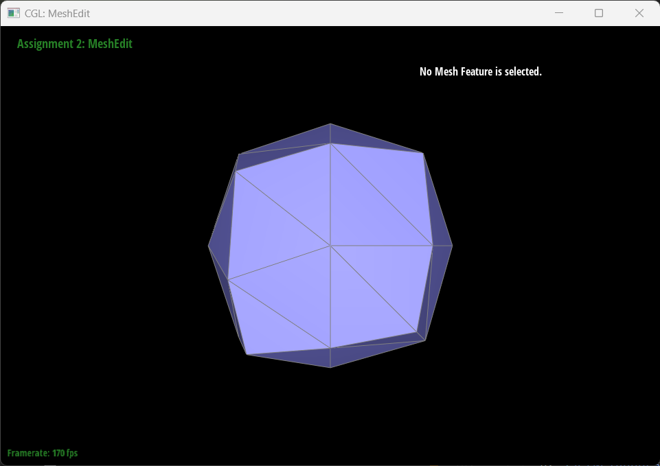
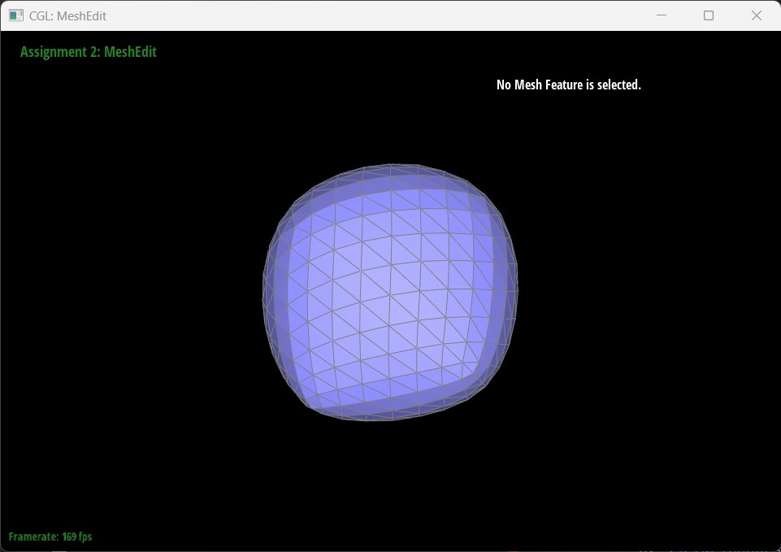
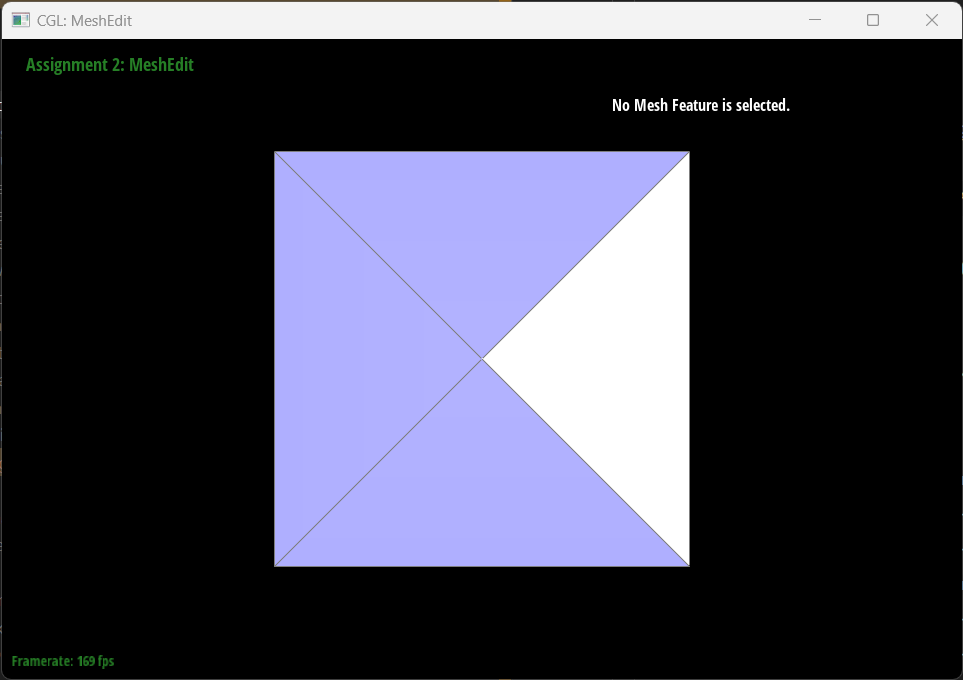
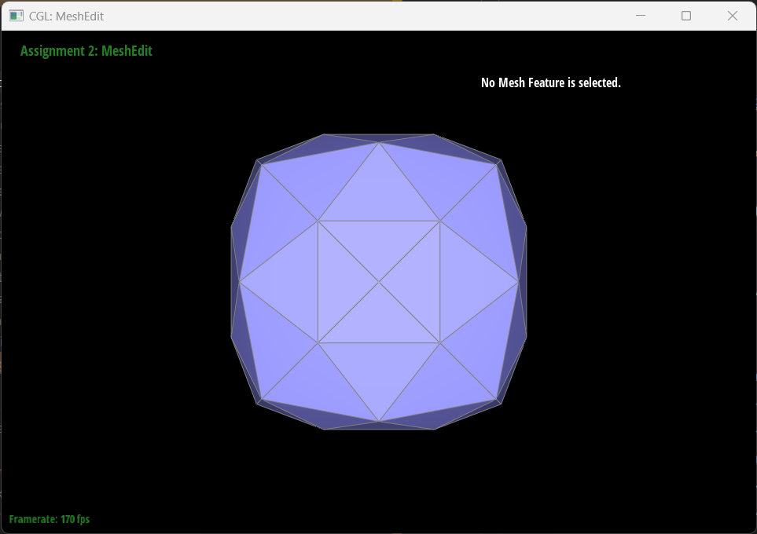
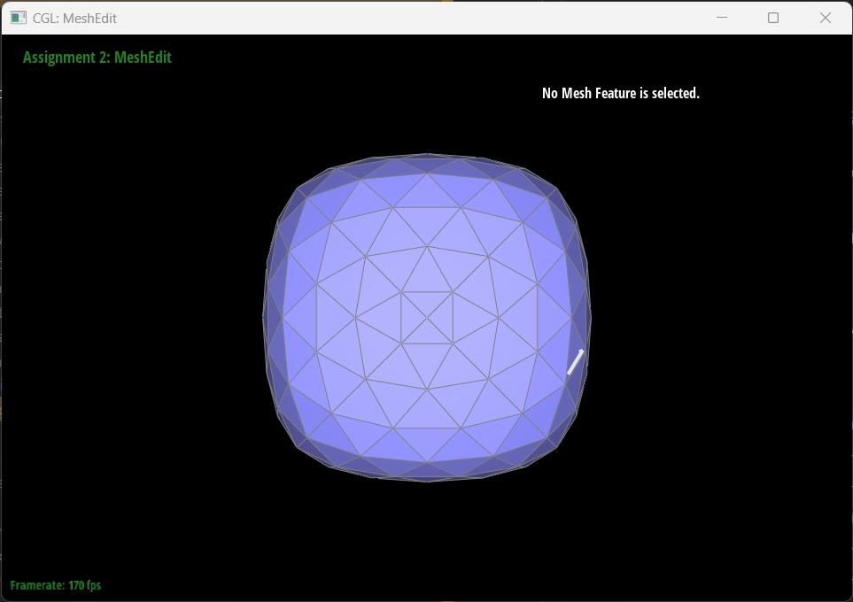
.png)
.png)
.png)
.png)